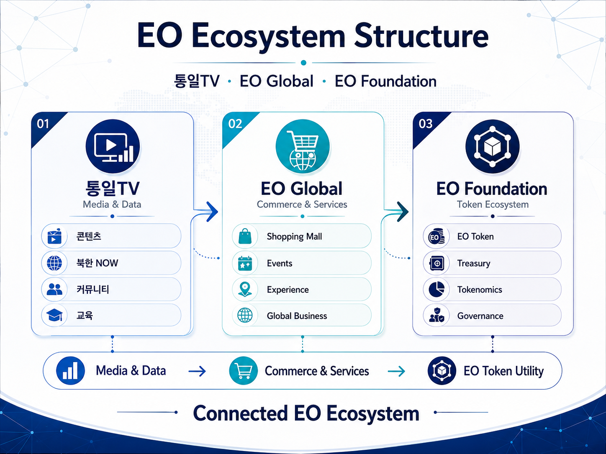

04
Ecosystem Operating Structure
PUBLIC RELEASEEcosystem Operating Structure

도표 3. EO 생태계 운영 구조
| 운영주체 | 주요 역할 | 백서상 포지션 |
|---|---|---|
| 통일TV | 방송, 북한 NOW, 콘텐츠 IP, 데이터, 커뮤니티, 문화·교육 | Media & Data |
| EO Global | EO Shopping Mall, 이벤트, 상업 서비스, 글로벌 사업 | Commerce & Services |
| EO Foundation | EO Token, Treasury, Tokenomics, Governance, 생태계 정책 | Token Ecosystem Steward |
세 조직은 하나의 통합 회사처럼 표현하지 않습니다. 각 조직은 독립된 역할과 책임을 가지며 EO 생태계 안에서 협력합니다.
EO Foundation
TGE 이전 해외 비영리형 EO Foundation 설립을 목표로 추진
관할지역은 규제 명확성, 국제적 신뢰도, 거래소·금융기관 호환성, 설립·운영비, 세무 효율을 종합평가하여 결정
초기 이사회는 창립자 중심의 소수 구조
필요 시 법률·금융·블록체인·세무·사업 전문가 자문단 구성
장기적으로도 Foundation 중심 운영을 유지하며 EO 보유 자체는 경영권·투표권을 의미하지 않음
Target Users
일반 소비자 — 쇼핑몰 구매, 이벤트·Experience Utility
통일TV 시청자·커뮤니티 — 콘텐츠·이벤트·향후 멤버십
기업·기관 — 북한 NOW 리포트, 데이터 서비스, B2B 리서치·컨설팅